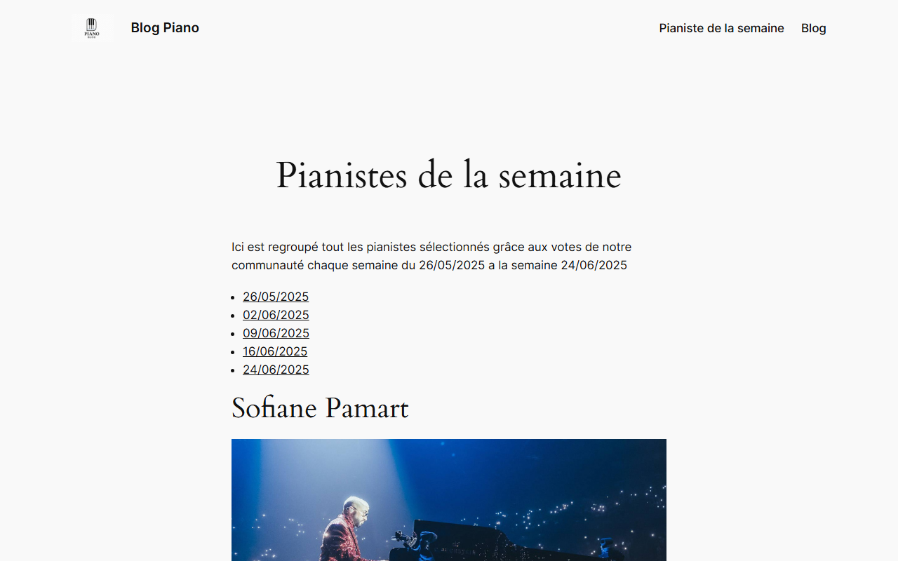
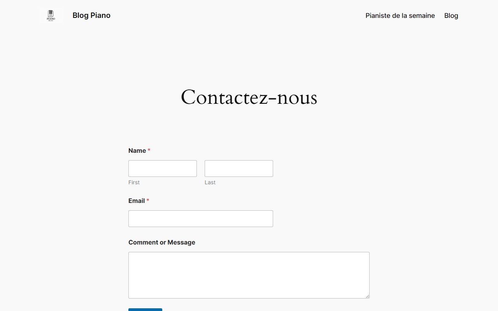
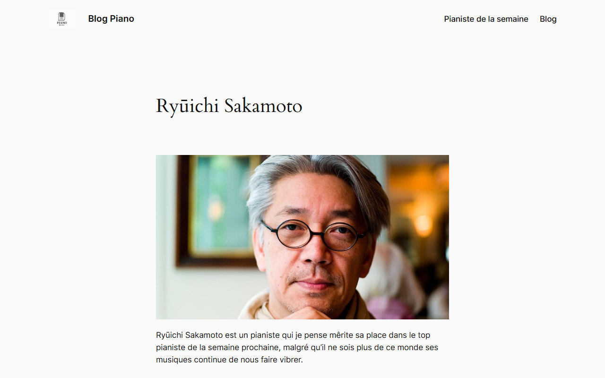

Blog / Accueil
Blog / Accueil

Pianistes
Contact
Article ZoomWordPress • Site Thématique
Discipline : Intégration Web, CMS & Administration Système • BUT MMI S2
b. Le Brief Client
Ce projet thématique individuel consistait en la conception, l'intégration et le déploiement d'un site média d'information dédié au piano et à la musique classique sous le CMS WordPress. L'exigence clé était de gérer en totale autonomie l'ensemble du projet, de l'orchestration locale des conteneurs jusqu'à l'administration fine de la base de données et la sécurisation des accès utilisateurs par rôles.
c. Le Processus Créatif
1. Dockerisation Locale & Rôles
Mise en place d'une infrastructure locale isolée via Docker et Docker Compose (MySQL et WordPress). Paramétrage et structuration de la matrice des rôles utilisateurs (Admin, Éditeur, Auteur) de A à Z avec affectation stricte des privilèges.
2. Intégration, Design & SEO
Sélection, intégration et customisation poussée du thème WordPress. Rédaction de fiches de compositeurs renommés (par exemple Ryuichi Sakamoto) et optimisation sémantique (SEO) des maillages internes.
3. Migration & Mise en Production
Exportation SQL locale. Transfert par FTP des fichiers WordPress vers Alwaysdata. Réimportation en ligne de la base avec correction et réécriture dynamique des URLs locales en adresses de production.
d. La Proposition (Livrable)
Le livrable est un site CMS complet, fluide, opérationnel et entièrement administré. Le site s'adapte à tous les écrans (desktop et mobile) et offre un blog dynamique sécurisé. Les captures d'écran ci-dessus présentent le rendu final, et le site est visitable en ligne en production.
Visiter le site en ligne (Alwaysdata)Le site en ligne est entièrement opérationnel, fluide et optimisé pour tous les écrans.
e. Résultat & Auto-Évaluation
Le site a été déployé avec succès sur Alwaysdata, garantissant une disponibilité permanente sans aucune perte de données ou de configuration par rapport à l'environnement Docker local.
Auto-évaluation des Compétences (BUT 2 MMI)
Ce travail de synthèse a validé mes compétences en Intégration Web & Administration de serveurs. J'ai prouvé ma capacité à conteneuriser un environnement de travail (Docker), à paramétrer et sécuriser les accès d'une application CMS multi-utilisateurs (gestion de rôles), et à mener à bien un processus de déploiement et de migration en production.